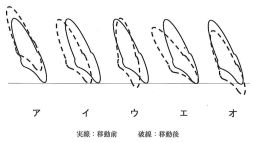
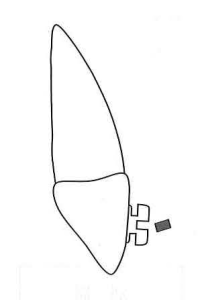

矯正力による歯の移動は、以下の6つの様式に分類される。
| 移動様式 | 英語 | 特徴 | 必要な力 |
|---|---|---|---|
| 傾斜移動 | Tipping | 歯根の根尖側1/3を支点（回転中心）に歯冠が傾斜 | 弱い力 |
| 歯体移動 | Bodily | 歯の長軸に平行に移動 | 強い力 |
| 挺出 | Extrusion | 歯槽から抜ける方向へ歯軸に沿って移動 | 弱い力 |
| 圧下 | Intrusion | 歯槽に食い込む方向へ歯軸に沿って移動 | 強い力 |
| 回転 | Rotation | 歯の長軸を中心として回る | - |
| トルク | Torque | 歯冠部を支点（回転中心）に歯根が唇舌的に移動 | - |
上顎前歯にトルク（歯根の舌側移動）を加えると：
| 項目 | 傾斜移動 | トルク |
|---|---|---|
| 回転中心 | 歯根の根尖側1/3 | 歯冠部 |
| 大きく動く部位 | 歯冠 | 歯根 |
| 小さく動く部位 | 歯根 | 歯冠 |
| 項目 | 挺出 | 圧下 |
|---|---|---|
| 方向 | 歯槽から抜ける方向 | 歯槽に食い込む方向 |
| 歯根膜 | 全体が牽引側 | 全体が圧迫側 |
| 必要な力 | 弱い力で可能 | 強い力が必要 |
| 歯根吸収 | リスク低い | リスク高い |
マルチブラケット装置を用いた矯正治療における歯の移動を図に示す。
トルクはどれか。1つ選べ。

【解説】図の各移動様式は以下の通り：
ア＝傾斜移動（歯根を支点に歯冠が傾斜）
イ＝歯体移動（歯全体が平行移動）
ウ＝挺出（歯が抜ける方向）
エ＝トルク（歯冠を支点に歯根が移動）
オ＝回転（長軸を中心に回る）
ブラケットが装着された上顎中切歯と、装着予定のアーチワイヤーの矢状断面図を示す。
装着後の歯の移動で増大するのはどれか。1つ選べ。

【解説】図はブラケットにレクタンギュラーワイヤー（四角形断面）を装着する様子。ワイヤーには捻り（トルク）が加えられており、装着すると歯根が舌側に移動する。これにより上顎中切歯歯軸傾斜角が増大する。SNA角、ANB角、上顎突出度は骨格の指標であり、歯の移動だけでは変化しない。
参考：新しい歯科矯正学 p.66-67